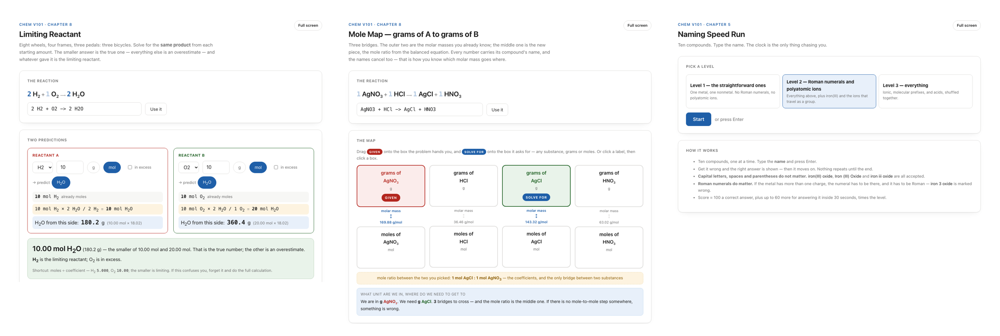

CHEM V101 Interactive Simulations
In brief
- A library of interactive simulations for CHEM V101, thirty-five as of September 2026, published in the course's Canvas modules.
- A student clicks a link in a module and it runs in the browser, with nothing to install and no account to create.
- Every number in the simulations was checked against my lecture notes.
- Through the API, each simulation goes onto the module page next to the material it belongs to, and a fix is re-uploaded to every course that uses it in one run.
- Each one still goes past me before students see it.
- When an instructor copies the Canvas page into another course, the simulation comes with it and works there.
Each line is quoted word for word from the full text of this page. In context opens the full text at that sentence.
Overview
A library of interactive simulations for CHEM V101, thirty-five as of September 2026, published in the course's Canvas modules. Each simulation is a single HTML file. A student clicks a link in a module and it runs in the browser, with nothing to install and no account to create.

Goals
Show on screen what I used to explain in words. In lecture I explain a lot through analogies. For electronegativity, I describe a crowd on a street drifting toward the more famous person. The Electronegativity difference simulation shows that analogy on screen. A student picks two elements, and the electron cloud slides toward the more electronegative atom.
The Electronegativity Difference simulation with H and Cl selected: the difference of 0.9 falls in the polar covalent band, and the shared electron cloud carries δ+ on H and δ− on Cl. The limiting-reactant simulation carries the same idea as the flasks and balloons on the CHEM V101 Lecture Demonstration page, with the balloons replaced by two bars that drain at the rate the coefficients set.
Give students in the hybrid section more to do in Canvas. Most of a Canvas course is pages to read and files to upload. The naming speed game, for example, is a timed round of ten compounds that a student can play alone at home.
Content from my lectures
Examples I use in class. Students can work through the same examples they saw on my slides and in my lecture notes.
- Balancing by counting uses the equations from my slides. The coefficients move, the subscripts stay locked, and a table counts the atoms on each side.
- Unit conversion chain reproduces the worked examples from my notes.
- Dilution reproduces the problems from my notes.
Points I return to in class. My lectures are recorded, and the record of three runs of this course shows which points I make every term.
- X in the denominator covers solving for a variable in the denominator, which comes up in density, molar mass and the gas laws.
- Calculator keystrokes covers entering scientific notation with parentheses or the EE key.
- Mole ratio is not mass ratio covers converting grams to moles before applying the ratio.
Every number in the simulations was checked against my lecture notes.
How they were built
I wanted demonstrations that fit lecture, and more in Canvas for students to do than read pages and upload files. Building them used to be out of reach, because I would have had to learn to program first. The database described on the Teaching Materials Database page is what made them possible. I did not have to explain my course, because the agent already had the analogy I use for electronegativity, the numbers I put on the board and the order I teach topics in, so what students open in Canvas matches what they heard in lecture. Through the API, each simulation goes onto the module page next to the material it belongs to, and a fix is re-uploaded to every course that uses it in one run. There are thirty-five as of September 2026.
Each one still goes past me before students see it. One showed a rearranged equation with a ÷ sign, and I had it rebuilt as a fraction, because the point of that lesson is that x is in the denominator and a ÷ sign hides it.
Use in Canvas
Each simulation opens on the module page, next to the material it belongs to. A student enters a value, moves a slider or drags a piece, and the screen responds. When a step is wrong, the simulation refuses it and shows the reason.
Sharing
When an instructor copies the Canvas page into another course, the simulation comes with it and works there. Any instructor who wants one can take it.
Status
All thirty-five are published in the course modules. I have asked students to tell me which simulations they would like, and I add new ones for lecture and lab as ideas come up.
Full list
| Chapter | Simulations | Students practice |
|---|---|---|
| 1 & 3 | Energy and properties | Telling endothermic from exothermic by choosing the system; intensive and extensive properties; comparing specific heats |
| 2 | Measurement bench (Exp 2) · significant figures · scientific notation · unit conversion chain | Reading a ruler and a graduated cylinder to the estimated digit; counting and rounding significant figures; moving the decimal point; cancelling units through a chain of conversion factors |
| 4 | A/Z notation · average atomic mass | Getting protons, neutrons and electrons from an isotope symbol; calculating a weighted average from isotope abundances |
| 5 | Naming builder · naming speed game | Naming ionic compounds, molecular compounds and acids, and writing formulas from names |
| 6 | Mole bridge · empirical formula | Converting among grams, moles and particles; finding empirical and molecular formulas from percent composition |
| 7 | Balancing by counting · the H–OH trick · odd-oxygen combustion · double replacement by charge | Balancing by changing coefficients only; keeping a polyatomic ion together as one unit; writing double-replacement products from ion charges |
| 8 | Mole map · limiting reactant · mole ratio is not mass ratio | Planning a stoichiometry route from the given to the unknown; finding the limiting reactant, theoretical yield and percent yield |
| 9 | Light as a wave · seating the electrons · why the periodic trends go that way | Relating wavelength, frequency and energy; writing electron configurations; explaining periodic trends from protons and shells |
| 10 | Electronegativity difference · Lewis dot budget · VSEPR · polarity and dipole | Classifying a bond from the electronegativity difference; drawing Lewis structures from the valence electron count; naming molecular shapes; deciding whether a molecule is polar |
| 11 | Gas laws · ideal vs real gas · gas stoichiometry | Choosing between the two gas equations; identifying the conditions where a real gas departs from ideal; stoichiometry with PV = nRT |
| 12 | Phase diagram · heating curve and intermolecular forces | Reading a phase diagram; calculating heat along a heating curve; ranking intermolecular forces |
| 13 | Dilution | Dilution calculations with the moles of solute held constant |
| 14 | pH slider | Relating pH, pOH, [H⁺] and [OH⁻] |
| Lab | Paper chromatography (Exp 11) | Measuring R_f and matching an unknown to the standards |
| Across chapters | X in the denominator (2 · 6 · 11) · calculator keystrokes (6 · 9 · 11) | Solving for a variable in the denominator; entering scientific notation on the calculator |